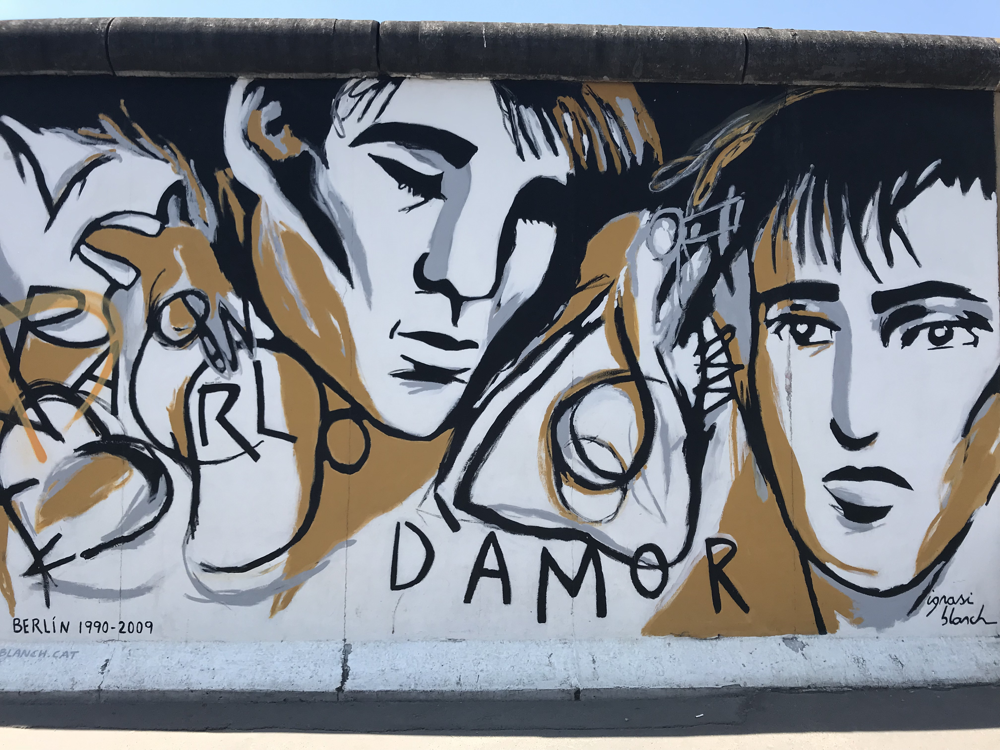
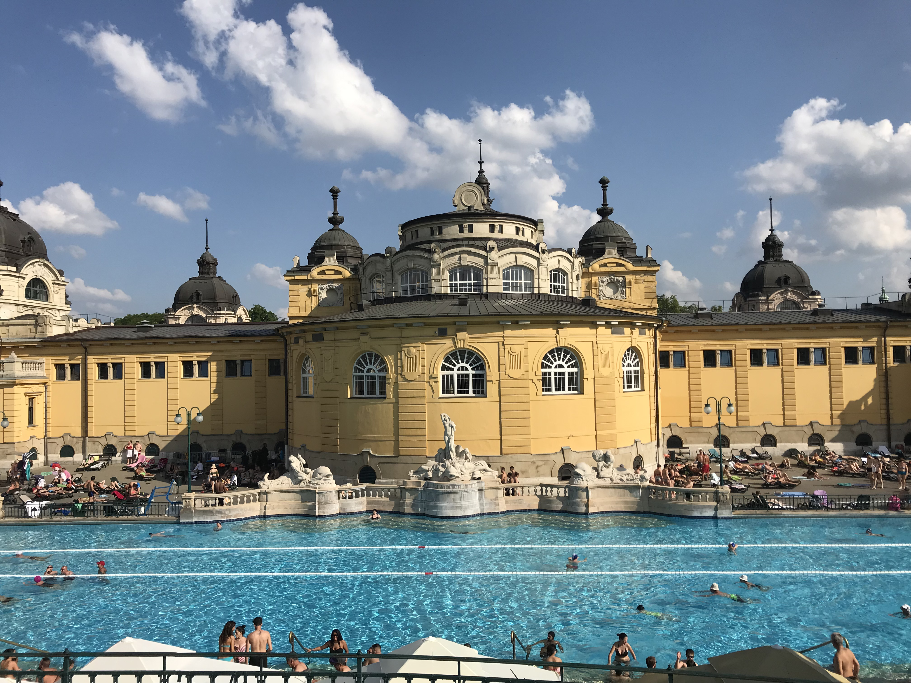
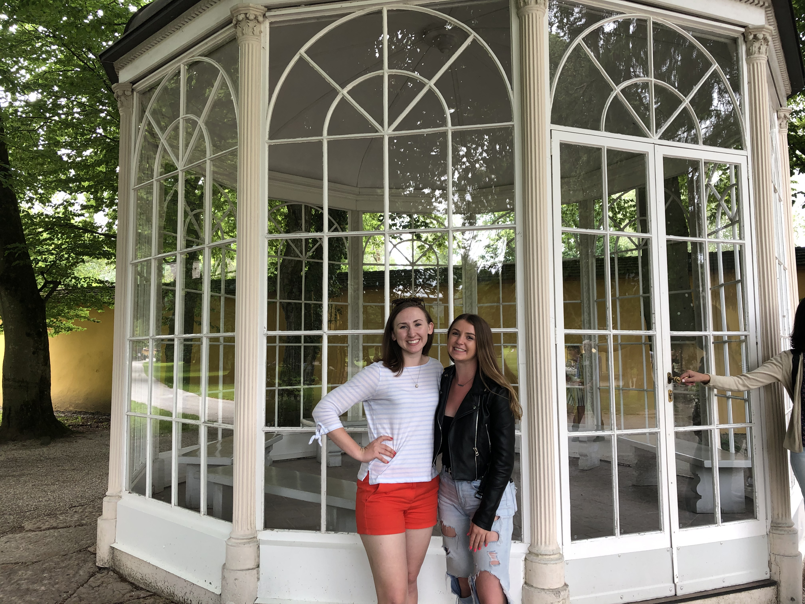
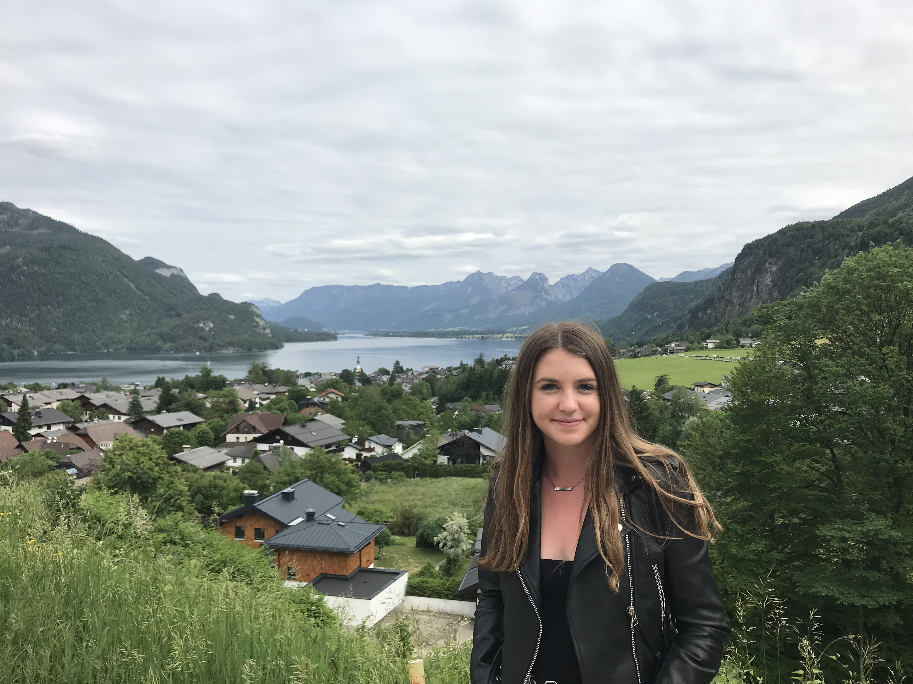
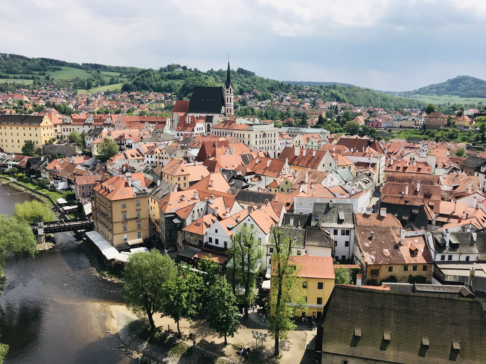

In the summer of 2019, I decided to do a 4 week study abroad in Prague, Czech Republic. I did not know a single person going into the trip and was extremely nervous about it; However, I ended up making a ton of friends during my time in Prague and traveled to 3 countries outside of the Czech Republic.
My friends and I took a trip to Berlin, Germany where we saw a lot of historical monuments and museums for the Holocaust and went to Beer Gardens!

Here is a photo from the Berlin wall
My friends and I also took a trip to Budapest, Hungary where we went to the famous thermal bath called the Szechenyi Bath.

The Szechenyi Bath is the largest medicinal bath in Europe!
Our trip to Austria was likely my favorite experience of my time in Europe! While we spent a majority of our Austria trip in Vienna, we also took a trip to Salzburg where we went on a "Sound of Music" tour through the countryside of Vienna and saw places where the movie was filmed.

The infamous gazzebo from "16 going on 17!"

The countryside of Salzburg, Austria
We also made sure to explore cities in the Czech Republic, besides Prague. Český Krumlov is a city that is known for its fairytale like set-up

Photographed is the city from the viewpoint of the castle which was founded in the 13th century and is at the center of the city.